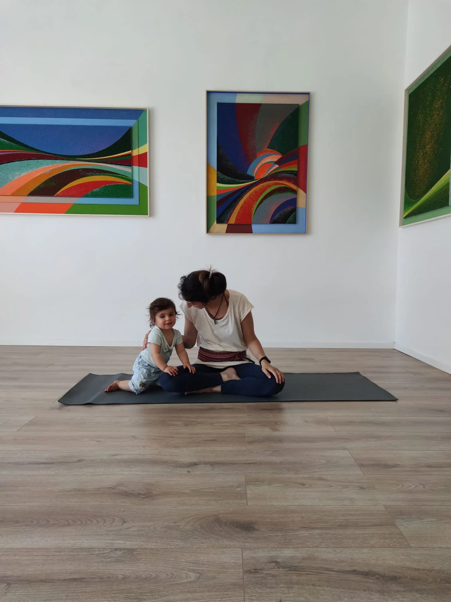
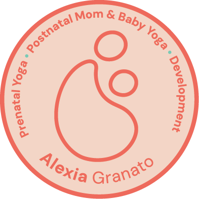
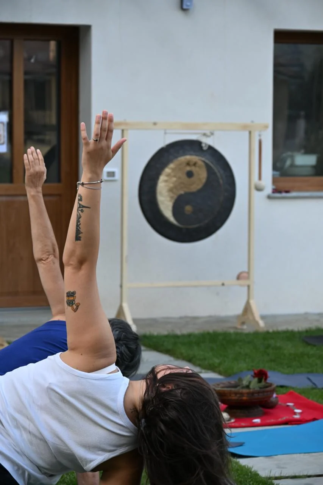
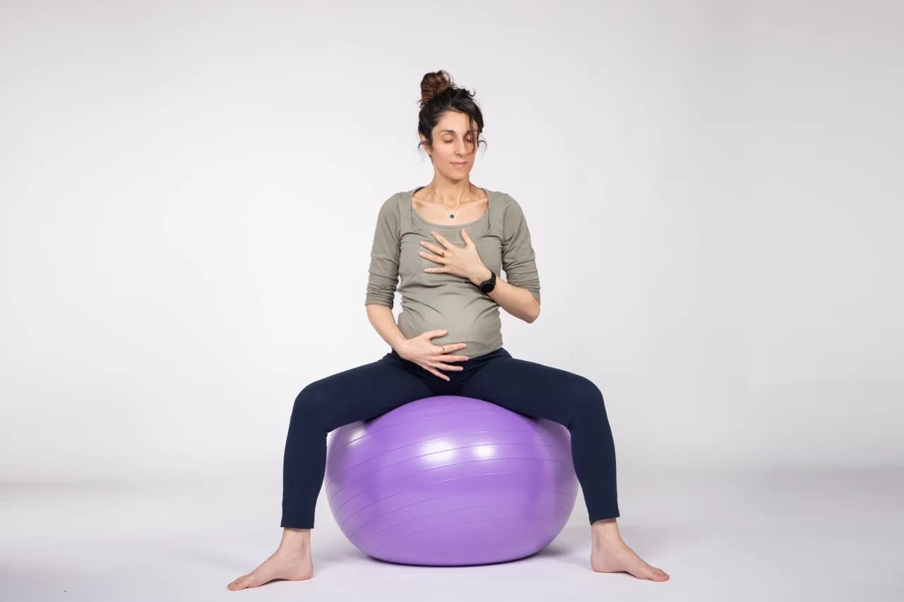
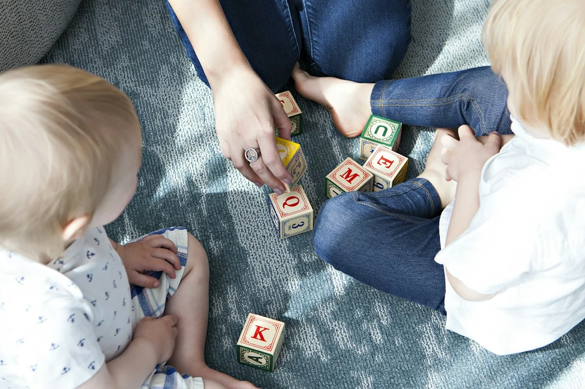
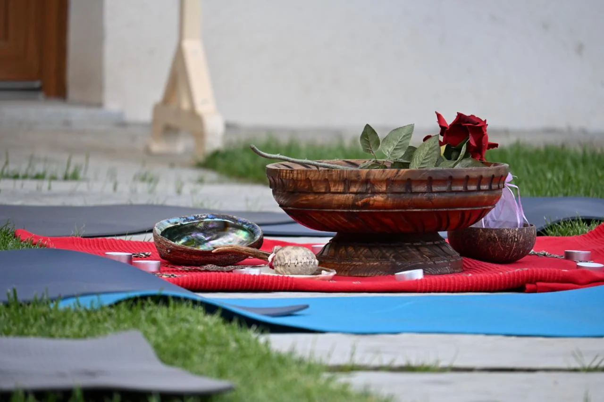
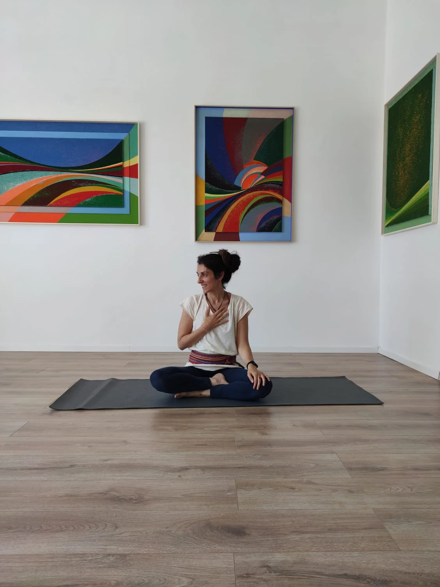

Custodisci il tuo benessere. Nutri la relazione. Cresciamo insieme.
Accogli i tuoi bisogni e riscopri il tuo centro in ogni fase della vita femminile e nella maternità. Troverai percorsi dedicati allo Yoga in gravidanza e post-parto per connetterti alla nuova vita, ma anche corsi di Hatha Yoga aperti a tutte le donne che desiderano ritrovare equilibrio e benessere. Uno spazio sicuro che accompagna la nascita e sostiene la crescita attraverso laboratori di sviluppo infantile e corsi di Yoga per bambini e bambine.
Che tu sia alla tua prima esperienza o che tu abbia già praticato yoga, troverai un ambiente sicuro, accogliente e rispettoso dei tuoi tempi.


Una filosofia che mette al centro la relazione
Benessere. Connessione. Crescita.
Tutto passa dalla relazione: il nostro benessere, quello della nostra famiglia, il legame profondo con i nostri bimbi e le nostre bimbe e la loro crescita. Il Purnam Mantra ci insegna che da un essere integro – la madre – prende vita un altro essere completo: il suo bambino o la sua bambina. Anche nel cammino verso l'indipendenza, la loro essenza rimane unita in un legame indissolubile. È una profonda connessione emotiva, fisica e spirituale che affonda le radici in un luogo di assoluta completezza e amore.
Questa visione di interconnessione e completezza guida ogni nostro percorso, attraverso tre pilastri fondamentali.
Equilibrio Fisico e Mentale
Attraverso il movimento consapevole, il respiro e l'ascolto di sé rilasciamo le tensioni e ritroviamo il nostro centro.
Per noi mamme rallentare, ascoltarsi, accogliere i propri bisogni psicofisici coltivando uno stato di serenità, fiducia e calma da trasmettere ai nostri bimbi, vivere la gravidanza con serenità, arrivare preparate al parto e ritrovarsi nel delicato momento del post-parto, trovando radicamento, centratura, intuizione e piena fiducia nelle nostre capacità.
Regolazione e Calma
Nutrire il legame profondo con se stesse e con la nuova vita fin dalla gravidanza, per dare inizio a una relazione fondata sull'ascolto, sulla sintonizzazione emotiva e sull'amore. Creare un canale di comunicazione profondo che accompagna la nascita e promuove la crescita del tuo bimbo o della tua bimba.
Movimento, Gioco e Sensorialità
Sostenere la tua crescita personale e quella del tuo bimbo o della tua bimba in modo armonioso, rispettando i tempi naturali dello sviluppo. Attraverso il movimento, il gioco, esperienze sensoriali, ti offro strumenti pratici e idee che puoi portare nelle tue giornate per favorire la crescita e il potenziale del tuo bimbo o della tua bimba.
I percorsi che ho pensato per te
Dall'Hatha Yoga al supporto per la gravidanza e i primi anni di vita: percorsi mirati per accompagnare con cura ogni trasformazione.

Percorso DonnaSezione Donna
Hatha Yoga per la Donna
Un tempo protetto per te, in tutte le fasi della vitaUn percorso fondato sull'ascolto di sé e sul movimento consapevole per aiutarti a ritrovare il respiro e regolare il sistema nervoso per trovare calma e centratura. È un'occasione speciale per staccare la spina, liberare il corpo dalle tensioni accumulate e calmare la mente.

Maternità & NascitaAccompagniamo la Vita che Cresce
🤰 Yoga in Gravidanza e per il Parto
Un appuntamento settimanale tutto per te e il tuo bimbo o bimba nella panciaUn percorso delicato dedicato al tuo benessere attraverso il movimento, il respiro e il rilassamento profondo. Uno spazio per onorare il corpo che cambia e prepararsi all'evento della nascita.
*Nota speciale. Completano il percorso speciali laboratori di yoga e arteterapia in gravidanza con Gabriella Ricco, arteterapeuta qualificata, oltre a incontri dedicati alla coppia e approfondimenti tematici in stretta collaborazione con l'ostetrica Stefania Cuccarollo.
Neomamme & Neonati
👩👦 Yoga Post Parto Mamma-Bebè
Per neomamme e neonati da 40 giorni a 1 annoUn tempo prezioso per prenderti cura del tuo benessere e quello del tuo bebè. Attraverso il movimento dolce, esperienze sensoriali, il gioco, il rilassamento rafforziamo il vostro legame reciproco e promuoviamo il suo sviluppo motorio in un clima protetto e accogliente.
Muoversi e Crescere Insieme
👶 Sviluppo Infantile (0-24 mesi)
Laboratori pratici e interattivi per genitori e bimbiScopriremo insieme come stimolare lo sviluppo del neonato fin dalle prime settimane attraverso l’osservazione, il movimento, esperienze sensoriali e il gioco. Imparerai a creare l'ambiente ideale e proporre gli stimoli corretti per gettare le basi dello sviluppo motorio del tuo bimbo e facilitare il raggiungimento delle tappe motorie (tummy time, controllo della testa, rotolo, gattonamento, camminata).
Primi Passi
🧒 Yoga Bimbi (1-3 anni)
Con mamma, papà o i nonniUno spazio sicuro da esplorare. Il tuo bimbo potrà sperimentare il movimento, gli stimoli sensoriali e l'immaginazione con la sicurezza della figura di riferimento, coltivando concentrazione e rilassamento nel gruppo.

Esclusivo 1-to-1Cammino Personalizzato
🌿 Dal Grembo ai Primi Passi
Benessere, connessione e crescita continuaUn cammino esclusivo che ti segue passo dopo passo: dalla gravidanza al post parto, fino ai primi passi del tuo piccolo. Interamente su misura per te, per vivere questa grande trasformazione con totale fiducia e serenità.

Eventi & RitualiCelebrare la Vita
✨ Esperienze, Cerimonie e Cerchi
Mother Blessing, Bridal Blessing, Eventi per la Donna e la FamigliaCredo profondamente nel potere della condivisione, della ritualità e della comunità. Ho creato questi spazi e cerimonie speciali per celebrare i passaggi più importanti della vita, trovare sostegno reciproco e vivere momenti di qualità attraverso la musica, il movimento e il bagno di suoni per tutta la famiglia.

Alexia Granato • Insegnante Certificata
La Mia Storia
Mi presento: sono Alexia
Benvenuta in questo spazio. Sono un'insegnante di yoga, un'istruttrice di sviluppo infantile e, soprattutto, la mamma di un bimbo pieno di energia nato in casa nel 2025.
Il mio viaggio con lo yoga è iniziato per motivi molto pratici: cercavo un modo per scaricare lo stress, alleviare un mal di schiena cronico e ritrovare il sonno. Giorno dopo giorno, però, ho scoperto che questa disciplina era molto più di un rimedio fisico. Mi ha donato una profonda consapevolezza del corpo, delle emozioni e delle azioni.
Lo yoga mi ha sostenuta nei momenti di grande cambiamento, custodendomi durante tutta la gravidanza e nel mio percorso da neomamma, aiutandomi a rallentare, ascoltarmi e ritrovare centratura.
Quando è nato mio figlio, ho sentito il forte desiderio di approfondire lo sviluppo motorio: volevo acquisire conoscenze e strumenti pratici per accompagnare al meglio la sua crescita, trovando piena sicurezza nel mio ruolo di madre.
Oggi unisco la mia specializzazione nel benessere in maternità al supporto dello sviluppo infantile, creando uno spazio sicuro per crescere insieme. Nel mio lavoro offro un luogo dedicato a te e al tuo bambino o alla tua bambina, dove potrai:
Esperienze Condivise
Cosa Dicono le Allieve e le Mamme
La testimonianza di chi ha trovato nel tappetino uno spazio protetto di ascolto, rinascita e connessione.
“Il corso di yoga in gravidanza con Alexia è stato fondamentale per arrivare al parto con serenità e fiducia. Le sue tecniche di respiro sono state la mia ancora durante il travaglio. Alexia ha una dolcezza e una professionalità rare.”
“Cercavo un'attività per scaricare le tensioni del lavoro e il mal di schiena. Nelle lezioni di Hatha Yoga con Alexia ho trovato molto di più: uno spazio protetto, accogliente e senza giudizio in cui ritrovare me stessa ogni settimana.”
“Il laboratorio di sviluppo infantile e lo yoga mamma-bebè sono stati una boccata d'ossigeno dopo i primi mesi da neomamma. Consigli pratici sul tummy time, giochi sensoriali e tanta complicità con la mia bimba.”
Dove Praticare Insieme
Le Mie Sedi sul Territorio
Trovi i miei corsi e laboratori in quattro accoglienti spazi sul territorio piemontese, oltre che online e a casa tua.
Lanzo Torinese
Ciriè
Robassomero
Venaria Reale
Risposte ai tuoi dubbi
Domande Frequenti
Tutto quello che desideri sapere sui corsi di yoga per la donna, gravidanza e post parto.
Da quale settimana di gravidanza è possibile iniziare lo yoga?
Lo yoga in gravidanza è consigliato a partire dal secondo trimestre (dalla 13ª/14ª settimana), previo parere favorevole del proprio ginecologo o ostetrica, e può essere praticato fino al momento del parto.
È necessaria una precedente esperienza di yoga per partecipare ai corsi?
No, tutti i corsi di Hatha Yoga per la Donna, Gravidanza e Post Parto sono pensati per accogliere sia chi è alla primissima esperienza sia chi ha già praticato in passato, rispettando i tempi e i bisogni individuali di ciascuna.
Quando si può iniziare il percorso post parto con il bebè?
Lo yoga post parto mamma-bebè è consigliato a partire da circa 40 giorni dopo il parto (o secondo indicazione medica/ostetrica), ed accoglie le mamme insieme ai bimbi fino ai primi gattonamenti.
In quali sedi si tengono i corsi?
I corsi e i laboratori si svolgono sul territorio in quattro sedi dedicate: Lanzo Torinese, Ciriè, Robassomero e Venaria Reale. Sono disponibili anche percorsi individuali su misura a domicilio o online.
Come funziona la lezione di prova?
È possibile prenotare una lezione di prova scrivendo direttamente su WhatsApp al 379 2631325. È l'occasione perfetta per conoscerci, respirare l'atmosfera dello spazio e comprendere se la pratica risuona con te.
Inizia il tuo viaggio con me
Contatti & Informazioni
Hai domande sui corsi, vorresti una lezione di prova o iniziare un percorso personalizzato? Contattami direttamente.
Invia un Messaggio
Compila il form per richiedere disponibilità o concordare una lezione individuale.